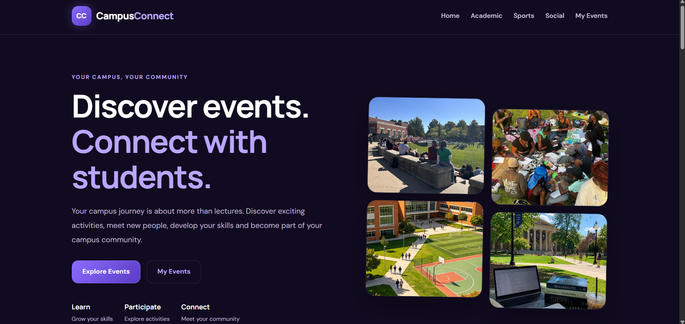
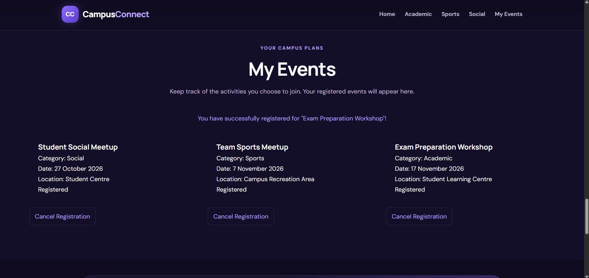
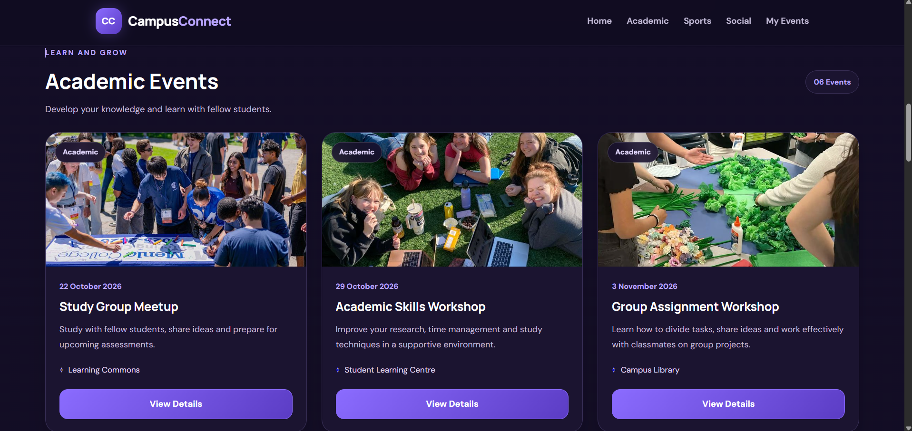
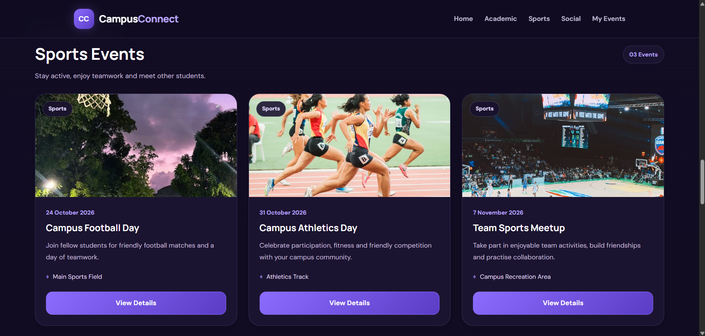
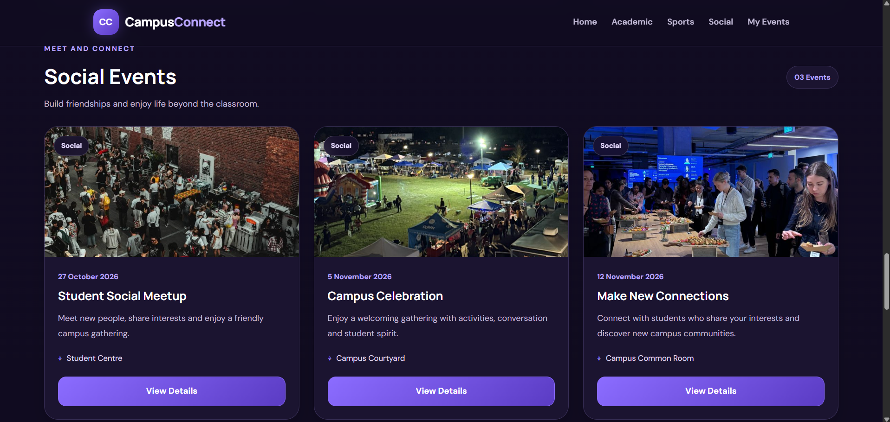

Event Discovery
Browse activities and events available to students.
WEB DEVELOPMENT PROJECT
Connecting students with campus life through a modern website where they can discover events, explore activities and register to participate in their college community.
01 — OVERVIEW
CampusConnect is a student-focused event discovery website designed to make campus activities easier to find and join. Students can explore upcoming events, search for activities, filter events by category, view event information and register for events that interest them.
02 — PROBLEM & SOLUTION
Students may miss campus activities because event information can be spread across different communication platforms. CampusConnect brings event discovery and registration together in one accessible website.
03 — FEATURES
Browse activities and events available to students.
Find events using search and category filters.
Explore additional information about available events.
Register for events that students want to attend.
View registered events and manage participation.
Cancel registrations and manage saved event selections.
04 — TECHNOLOGY
05 — DEVELOPMENT
Developing CampusConnect strengthened my understanding of front-end development, user interface design, JavaScript interactions, event handling, browser storage and creating user-friendly website experiences.
06 — TECHNICAL NOTE
The current prototype uses browser localStorage to retain event registration information. It does not currently use a remote database or server-side authentication.
06 — APPLICATION SCREENSHOTS
A visual look at the different sections and functionality of the CampusConnect student events platform.

The main landing page introducing students to CampusConnect.

Browse available campus events and activities.

Discover academic activities and educational opportunities.

Explore sporting activities and campus competitions.

Discover social activities and student community events.
View and manage registered campus activities.